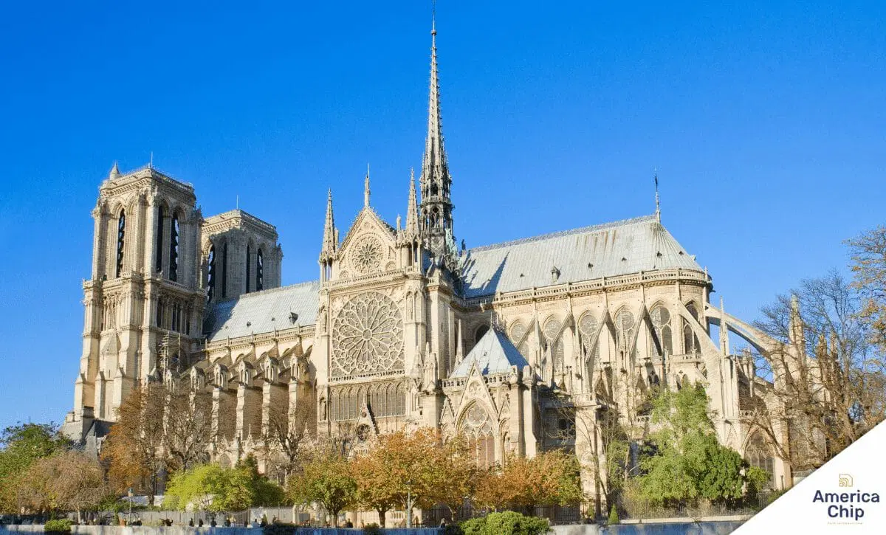

Pontos turisticos da europa
- Torre Eiffel
- Atenas
- Coliseu de Roma
- Torre Big Ben
- Sagrada Família
- Catedral de Notre Dame
- Museumplein
- Torre de Belém

Catedral de Notre Dame
Construída em estilo gótico, a catedral tem mais de 700 anos e é rodeada de mistérios. A igreja levou 200 anos para ser terminada, desde 1163 a 1345, e hoje é considerada o marco 0 de Paris. Este grande ícone da história francesa serviu de palco para a beatificação de Joana d’Arc e a coroação de Napoleão Bonaparte. Para se ter noção da grandiosidade da Catedral de Notre Dame, ela é um dos pontos turísticos mais visitados do planeta, recebendo mais de 10 milhões de turistas anualmente. Ou seja, não pode ficar de fora da sua lista de